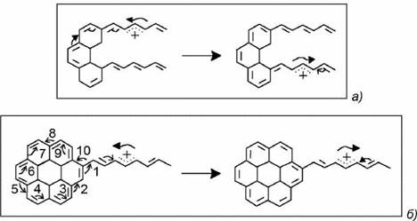

электронный
ресурс по учебной дисциплине 1-58 01 01 - "ИНЖЕНЕРНО-ПСИХОЛОГИЧЕСКОЕ ОБЕСПЕЧЕНИЕ ИНФОРМАЦИОННЫХ ТЕХНОЛОГИЙ"
|
||
| Оглавление | Программа | Теория | Практика| Контроль знаний | Об авторах | ||
Лекция 7
Приборы криоэлектроники, хемоэлектроники, молекулярной электроники и биоэлектроники
Физические основы. Функциональная молекулярная электроника представляет собой направление в функциональной электронике, в котором изучаются процессы переноса и хранения информационного сигнала в молекулярных системах, а также разработка молекулярно-инженерных технологий для создания приборов и устройств обработки и хранения информации.
Идеи молекулярной электроники несколько отличаются от идей микроэлектроники. В процессе создания и микроминиатюризации приборов микроэлектроники создаются технологические процессы, связанные с удалением лишнего материала, изменением проводящих свойств материала с целью создания физических барьеров и переходов.
В молекулярной электронике развиваются методы конструирования и изготовления органических молекул с заданными свойствами, методы агрегации молекул нескольких типов. Первые методы связаны с созданием материалов с заданными электрическими свойствами путем подбора размеров молекул, их формы, взаимного пространственного их расположения, параметров различных функциональных групп молекул. Этот метод получил название молекулярная инженерия и с его помощью разработана концепция создания молекулярного электронного прибора.
Молекулярный электронный прибор приобрел статус микроэлектронного прибора после того, как были изготовлены переключатели и инверторы на молекулярном уровне. Проводниками, линиями межсоединений в таких структурах служат одномерные полимеры типа трансполиацетилена (СН)Х или нитрида хлора (SN)X. Электрически механизм переключения на молекулярном уровне эквивалентен изменению валентности молекул. Валентность же связана с туннелированием электронов через неширокие периодические решетки, образованные молекмттями (рис.7.1)
Рисунок 7.1 – Туннелирование электрона сквозь периодическую молекулярную решетку
Электрон способен преодолеть периодическую молекулярную решетку только в том случае, если его энергия равна или больше энергетического барьера внутри решетки. Электроны не могут преодолеть молекулярную периодическую решетку, если их энергия соответствует величине каждого энергетического барьера внутри решетки (рис. 7.1, а), и свободно проходят через систему потенциальных барьеров при условии равенства или превышения энергии псевдостационарного уровня (рис. 7.1, б).
Идея переключения в подобных структурах будет осуществляться, если высота барьера или глубина ямы регулируются внешними факторами. Среди таких механизмов отметим перемещение положительного или отрицательного заряда внутри молекулярной цепочки, переключение потока туннелирующих электронов путем смещения высоты псевдоэнергетических барьеров. Этот метод развивает схемотехнические принципы обработки информации и ее хранения.
Молекулярный аналог элементарной логической ячейки И — НЕ строится на базе тетрамерной производной с диазосвязями (рис. 7.2).
Периодический потенциал формируется четвертичными атомами азота, входящими в структуру. Две из четырех контрольных групп могут управляться потоками заряда через цепочки
(СН)х путем нейтрализации положительного заряда.
Молекулярная ячейка типа ИЛИ — НЕ представляет собой набор колец фталоцианида галлия, связанных фтором. Соединения типа Ni — S обеспечивают заземление и связь с отрицательным потенциалом, а также с выходным выводом (SN)„ (рис. 7.2, б). Эти базовые элементы могут стать составными частями биологических компьютерных систем. Размеры структур логических ячеек могут составлять менее одной сотой размера полупроводниковой логической ячейки. Ожидаемая плотность размещения составит 1018 вентилей/см3. При всей привлекательности такой идеи молекулярных схем (даже с точки зрения использования при, создании компьютеров) в ней содержится врожденный порок схемотехники. Речь идет о тех же схемотехнических решениях, тех же проводах, хотя это уже не пленочные токоведущие дорожки, а молекулярные цепочки. Все это не исключает возможность возникновения традиционных для схемотехнических решений недостатков, а также новых, специфика которых состоит в налаживании надежных контактов между отдельными соединениями.
Рисунок 7.2 – Молекулярные логические вентили типов И — НЕ (а) и ИЛИ — НЕ (б)
Методы агрегации определенного числа молекул нескольких типов или межмолекулярной самосборки позволяют получать заданные размеры и форму функционального элемента за счет выбора параметров, участвующих в самосборке молекулы, создать серию функциональных элементов без разброса параметров со строгой атомной детализацией.
Для получения сверхтонких пленок используется метод Ленгмюра — Блоджетт. Суть метода сводится к использованию нерастворимых поверхностно-активных веществ. Эти вещества формируют из двух фрагментов. Один фрагмент представляет собой гидрофильное вещество, имеющее сродство к воде, и хорошо в ней растворяющееся. Второй компонент — гидрофобный. Он не растворяется в воде и не позволяет молекуле поверхностно-активного вещества погрузиться в воду. Формирующиеся на поверхности воды однородные мономолекулярные пленки могут быть перенесены на твердые структуры подложки с различными типами слоев.
Динамические неоднородности>. Передача информации в молекулярной электронике осуществляется ансамблями электронов или солитонов.
В масштабах микромира под солитоном понимают структурное возмущение, способное перемещаться в одном или двух направлениях подобно частице. Перенос солитона связан с возмущением, которое меняет положение молекулярных, так называемых -орбиталей между атомами углерода. В центре солитона существует движущаяся межфазная или междолинная граница между эквивалентными фазами A и В (рис. 7.3, а). Прохождение солитона через сопряженную систему приводит к переходу между фазами А и Вик обмену одинарных и двойных связей.
Солитоны могут быть интерпретированы как топологические узлы валентной п- электронной системы.
Вследствие врожденности основного состояния электропроводящих полимеров солитоны могут свободно перемещаться вдоль цепи сопряжений подобно волне плотности п-электронов (рис. 7.3). Скорость перемещения солитонов близка к скорости звука.
Рисунок 7.3 – Генерация и распространение солитона в полиацетиленовой цепи (а, б); интерпретация в виде волны возмущения (в)
Солитон обладает свойствами квазичастицы, имеет определенную энергию, форму, момент импульса. На молекулярном уровне также наблюдается реверсирование солитонов.
Различают два режима отражения солитонов. Две трансполиацетиленовые цепочки сопрягаются с трициклическим пентоином. Солитон проходит, отражаясь от пентоина словно от стенки (рис. 7.4, а). Другой вариант предусматривает использование гидрированного каротена в качестве реверсивной среды (рис. 7.4, б). В этом случае солитон обходит молекулу по часовой стрелке. Движение валентных п-электронов происходит по про нумерованному порядку. Движение электрона со стрелкой под номером 10 может произойти только после того, как завершится движение со стрелкой 1. Солитон проходит по одной цепочке дважды.

Рисунок 7.4 – Процесс реверсирования солитонов
Наряду с солитонами в молекулярной системотехнике используются процессы переноса электронов по цепочкам различных циклических молекул, даже разделенных зазором до 1 нм. Электроны туннелируют по молекулам, переходя в соседние молекулы за время ~10-10 ¸ 10-12 с. Основным эффектом при этом является быстрое резонансное и одновременно однонаправленное туннелирование за счет того, что уровень для лишнего электрона в каждой последующей молекуле на 0,14 - 0,2 эВ ниже, чем в предыдущей. Эффект быстрого резонансного туннелирования проявлялся в континуальных молекулярных средах, у которых молекулы в цепочке подобраны так, что энергия электрона, поляризовавшего одну молекулу, равна энергии электронного уровня другой, не поляризованной молекулы. Другими словами, цепочка молекул должна строиться так, чтобы энергии уровней для лишнего электрона снижались на 0,1—0,2 эВ.
В ленгмюровских пленках с помощью света можно возбудить экситоны, представляющие собой мигрирующее электронное возбуждение, не связанное с переносом электрического заряда и массы.
В качестве динамической неоднородности можно использовать один электрон. Это позволяет достичь энергетического предела, минимизировать энергию на одну информационную операцию. Если между отдельными молекулами создать разность потенциалов V, а энергетический барьер по полю составляет
(7.1)
то в обратном направлении этот барьер будет определяться величиной
(7.2)
где е — заряд электрона. Барьер одновременно будет препятствовать движению электрона в обратном направлении. Однако использование только одного электрона накладывают значительные ограничения на "одноэлектронику".
Континуальные среды. Ленгмюровские пленки представляют собой многофункциональную континуальную среду. На основе пленок Ленгмюра — Блоджетт (ЛБ) можно создать молекулярно-гладкую континуальную среду со свойствами проводника, подзатворного диэлектрика, плазмостойкого резистора, пироэлектрика и биосенсора (рис. 7.5).
Рисунок 7.5 – Высаживаемые на различные подложки пленки Ленгмюра — Блоджетт, состоящие из разного типа молекул (а, б, в, г), и создание континуальных сред на их основе (д)
На рис. 7.6 показаны структуры ряда синтезированных органических полимеров.
Весьма перспективной средой для функциональной молекулярной электроники являются органические полимеры. Они состоят из цепочки слабосвязанных молекул с частично заполненными зонами валентных электронов.
а — полиэтилен (трансформа); 6 — полиэтилен (цисформа); в — полипролл; г — полифинилен
Рисунок 7.6 – Структуры полимерных континуальных сред:
Квазиодномерный органический полимер полиацетилен может быть легирован донорами (K, Na, Li) и акцепторами (Br, AsF5, PF6), и имеет слабое взаимодействие электронов с решеткой.
Цепочки образуют поликристаллические волокна диаметром 20 нм. Пленка полиацетилена представляет собой переплетенные волокна (паутина). Различают две модификации полиацетилена: цис- и трансизомеры. Полиацетилены могут быть получены в виде молекулярных кристаллов диацетилена (мономера).
Возможно получение пленок из поликристаллов полиацетилена. Полипролл представляет собой пленки с локальным кристаллическим порядком. В них можно осуществить регулярность в расположении легирующих примесей и стехиометричность состава легированных материалов. Полифинилены существуют в виде порошков и пленок. Это далеко не полный перечень сред. Число известных синтезированных органических веществ превысило пять миллионов.
Другие элементы приборов. Динамическими неоднородностями типа электронов и солитонов можно управлять. В молекулярной системе, в которой двойная связь является частью большой полиацетиленовой цепочкой, под воздействием поляризованной фотоактивации включается процесс переноса электронов (рис. 7.7). При прохождении солитона (см. нижнюю цепочку) фото-активационный процесс становится невозможным.
Рисунок 7.7 – Молекулярный детектор солитонов
Другими словами, солитон включает реакцию внутреннего переноса заряда, а изменения в спектре поглощения олефина может служить детектором, регистрирующим прохождение солитона.
Генерация солитонов осуществляется в процессе протонного туннелирования, например, между вторичным анином и кетонной группой трансполиацетилена в присутствии электрического поля.
Итак, показана возможность генерации, управления и детектирования солитонов. Солитон, являясь динамической неоднородностью, способен переносить информацию; с его помощью можно и хранить информацию.
Молекулярные устройства. Хранение бита информации в солитонной памяти определяется наличием или отсутствием солитона, а число хранимых битов зависит от скорости распространения солитона и длины сопряженного полимера (рис. 7.8). Сопряженный полимер связывает генератор солитонов (ГС) и электронный туннельный переключатель (ТП). Показана возможность накопления четырех битов информации. При одновременном прибытии положительного и отрицательного солитонов срабатывает туннельный переключатель. Солитонные устройства памяти не имеют высокого быстродействия, однако, отличаются высокой плотностью хранения информации. Оценки показывают, что если расстояние между солитонами составляет ~ 200 Å, а расстояние между центрами цепочек ~ 50 А, то информационная емкость близка к ~ 1018 бит/см3.
Рисунок 7.8 – Схема устройства памяти, реализованная на солитонах
В устройствах памяти могут быть использованы и пленки Ленгмюра:— Блоджетт. Каждая молекулярная система имеет свою частоту поглощения. Запись информации осуществляется избирательно в ансамбль молекул трехмерной молекулярной пленки с помощью лазерного излучения определенной частоты. Считывание информации осуществляется за счет обратных физических явлений. Использование свойств молекулярных структур позволяет создать трехмерные запоминающие устройства высокой информационной емкости.
Существуют различные идеи построения молекулярных компьютеров. Их микросборка, например, может быть осуществлена химическим осаждением из газовой фазы. Последовательность химических превращений при создании молекулярной вычислительной машины рассчитывается по заданному алгоритму.
В итоге к базовой молекуле добавляются все новые и новые звенья, формируются проводники, изоляторы, вентили, компоненты вычислительных устройств. Так, например, размер молекулярного вентиля может быть меньше одной сотой микрометра, а плотность сборки может достичь 1018 вентилей/см3.
Процессор и память гипотетического молекулярного компьютера занимают объем ~ 1 см2 и монтируются на криостате, который предотвращает нагрев контактов и снижает химическую активность молекул. Для уменьшения количества межсоединений предусматривается использование оптических каналов для ввода-вывода информации. Обработка информационных массивов молекулярными системами имеет ряд особенностей, среди которых важнейшими являются:
- гигантский параллелизм переработки информации;
- высокая эффективность преобразования информации;
- значительная информационная сложность исходных операций;
- способность к изменчивости и эволюции молекулярных компонентов устройств переработки информации и эволюционному обучению (самообучению) устройств;
- динамические механизмы переработки информации, основанные на сложных нелинейных процессах.
Другим примером высокой производительности может служить процессор, реализованный на пленках Ленгмюра — Блоджетт. На таких пленках можно создать молекулярные системы с высокой степенью параллелизма обработки информации и большой вычислительной мощностью.
В качестве примера приведем идею сложения двух образов, проецируемых на искусственную мембрану типа ленгмюровской пленки со встроенными молекулами фотоактиви-руемого фермента (динамические неоднородности). В этом случае выходной сигнал, представляющий собой концентрацию продукта ферменто-активной реакции, будет пропорционален сумме оптических сигналов на входе системы.
Оценки показывают, что при поверхности пленки ~
Автоволновая электроника. Особое место в молекулярной электронике занимают перспективные идеи автоволновой электроники.
В автоволновой электронике изучаются процессы, происходящие в неравновесных открытых кинетических системах, которые проявляются в виде разнообразных нелинейных автоволн, стационарных пространственных структур, стратов, доменов и других типов динамических неоднородностей.
Наибольший, пожалуй, интерес представляют собой автоволны—, класс нелинейных волн, распространяющихся в активных континуальных средах за счет запасенной энергии. Следует особо подчеркнуть, что автоволны распространяются в средах, в каждом локальном объеме которых осуществляется независимая накачка энергии (равно как и вещества) и имеется диссипативный сток для отработанных "продуктов" накачки (рис. 7.9).
1 — плоский волновой фронт огибает препятствие; 2 — спиральные волны; а — двумерная среда, б—вращающийся свиток, в — вихревое облако
Рисунок 7.9 – Типы автоволновых процессов
В качестве континуальных сред в устройствах автоволновой электроники используются активные распределенные среды, в которых возможна реализация большого числа самозадерживающихся нелинейных пространственно-временных возбуждений. К таким средам можно отнести биологические активные мембраны, мышечные волокна, нейронные сети, распределенные биохимические среды, а также некоторые сообщества живых организмов.
Генератором динамических неоднородностей автоволновой природы являются: импульсы внешней накачки, различные флуктуации.
Автоволны способны аннигилировать при столкновении двух встречных волновых фронтов, не отражаются от препятствий и границ среды, однако дифрагируют на препятствиях в соответствии с принципом Гюйгенса. Различают плоские и спиральные волны (рис. 7.9).
Управление автоволновыми процессами может осуществляться с помощью тепловых полей, локальным энергетическим воздействием, введением дополнительной массы вещества.
Автоволновые среды обладают свойством ассоциативной памяти. Это обусловлено рядом причин, среди которых важной является отсутствие локальной пространственной адресации записываемой информации. Адресация и считывание возможны только по содержанию информации, по характерным признакам. Автоволновые среды способны регистрировать предысторию своего функционирования путем накопления определенных качеств или свойств в материале. Такие среды обладают распределенной памятью и способны к обучению под воздействием внешних условий.
Реализация памяти с использованием автоволновых процессов происходит по следующей схеме. В сосуде 1 находится вещество 2 и его расплав 3 (рис. 7.10). В режиме записи (рис. 7.10, а) опорный источник создает однородный поток тепла. Возникший градиент температуры dt/dy— возбуждает в диссипативной автоволновой среде конвективные ячейки.
Если на опорную матрицу воздействовать тепловым сигналом от источника В, то произойдет перестройка потоков, адекватная информационному воздействию потока В. Возникнет структура, описывающая поверхность изотермы плавления
. Эта структура характеризует структуру конвективных потоков, интенсивности тепловых выбросов и т. д. Другими словами, можно изготовить копии рельефа в виде аb. Таким образом реализуется память.
Рисунок 7.10 – Схема ассоциативной памяти: а — запись; б— воспроизведение структуры
Ассоциативное восстановление можно провести по схеме рис. 7.10, б. Условия неравновесности создаются источником А, а дополнительным организующим фактором структура рельефа
. Достижение комплементарного соответствия вложений
и . является актом распознавания образа. Этот метод имеет некоторое сходство с волновой голографией, а именно — реализуется в опорную упорядоченность в условиях самоорганизации.
Можно ожидать, что в дальнейшем исследования будут развиваться с использованием синергетического подхода к поведению автоволновых сред. Под синергетикой будем понимать процессы, происходящие в системах, состоящих из многих подсистем самой различной природы, например, электроны, атомы, молекулы, клетки, нейроны, фотоны, животные организмы. Такие структуры возникают в процессах самоорганизации, переходов типов "беспорядок—порядок", "порядок—порядок" и т. п.
Содержание
| (С) БГУИР |